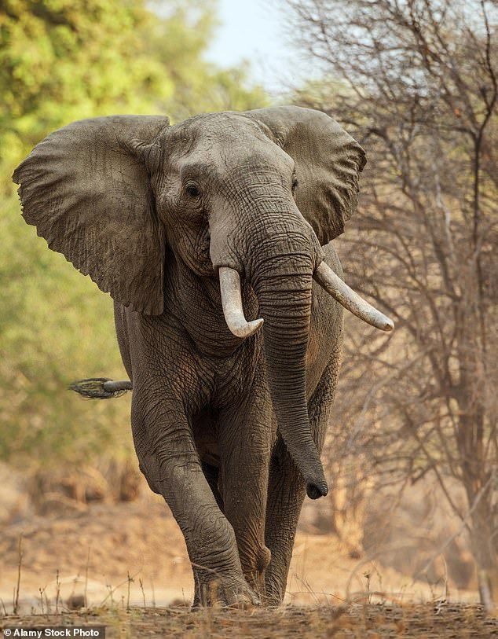

Nestled in the heart of the Indian Ocean, Sri Lanka is a haven of biodiversity. Its lush landscapes are home to rare species like the elusive leopard and the vibrant Sri Lankan junglefowl. From misty mountains to sun-soaked coastlines, this island nation offers a unique tapestry of life. Underwater, colorful coral reefs thrive. In Sri Lanka, nature's canvas is painted with the brilliance of diverse and endemic species, making it a true jewel in the crown of global biodiversity.
